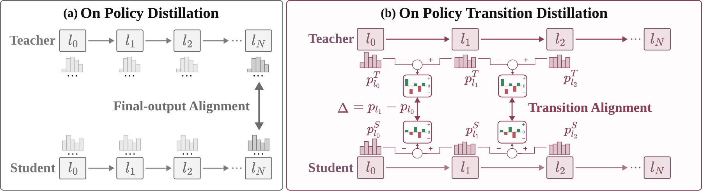

On-Policy
Transition Distillation
Distill how a teacher refines its predictions across depth.

Abstract
On-policy distillation consolidates expert capabilities into a single student by matching teacher and student final-layer distributions on student-generated rollouts. We investigate whether depthwise prediction transitions—the changes in predictions between layers—can provide additional task-relevant supervision.
Our diagnostic study associates stronger teacher–student agreement in intermediate transitions with higher answer correctness within questions. These observations motivate OPTD, which augments final-layer distribution matching by aligning teacher and student layer-to-layer log-probability increments. We evaluate three backbones on mathematics, coding, and instruction following.
Usage example
Released checkpoints are complete models. Load one, format a prompt, and generate. Qwen3-4B Mid and Late use non-thinking mode; R1-Distill checkpoints omit enable_thinking=False.
import torch
from transformers import AutoModelForCausalLM, AutoTokenizer
model_id = "ModalityDance/OPTD-Qwen3-4B-Late"
tokenizer = AutoTokenizer.from_pretrained(model_id)
model = AutoModelForCausalLM.from_pretrained(
model_id, torch_dtype=torch.bfloat16, device_map="auto"
)
messages = [{"role": "user", "content": "Solve 2x + 5 = 17."}]
text = tokenizer.apply_chat_template(
messages, tokenize=False, add_generation_prompt=True, enable_thinking=False
)
inputs = tokenizer(text, add_special_tokens=False, return_tensors="pt").to(model.device)
with torch.inference_mode():
output = model.generate(
**inputs, max_new_tokens=1024, do_sample=True, temperature=0.7, top_p=0.95
)
print(tokenizer.decode(output[0, inputs.input_ids.shape[-1]:], skip_special_tokens=True))
The same pattern is the quick start on each model card. Dataset generation and downloads are in the inference guide.
How it works
OPTD separates on-policy generation, depthwise transition comparison, and the student update. The final-policy objective, the selected layer path, and the domain teachers can be swapped without rewriting the rest of the trainer.
1. Generate on-policy
The student samples responses. Each prompt receives supervision from its corresponding domain specialist.
2. Compare increments
Read teacher and student predictions at selected blocks on the same candidate tokens, then compare their log-probability changes.
3. Distill both signals
Retain final-policy OPD and add equally weighted transition updates across the selected path.
The practical update uses detached increment gaps and destination-layer student probabilities. Its relation to exact reverse transition-KL is treated separately. See implementation details.
Experimental settings
| Student | Domains | Training updates | Generation mode |
|---|---|---|---|
| R1-Distill-Qwen-1.5B | Math + coding; three-domain extension | 150 | Reasoning |
| Qwen3-4B | Math + coding | 50 | Non-thinking |
| R1-Distill-Qwen-7B | Math + coding | 100 | Reasoning |
Evaluation covers AIME24/25, AIMO, LiveCodeBench v5, CodeContests, Codeforces with a local CodeElo estimate, and IFEval. See the protocols and release scope before comparing scores.
Resources
Installation and training · Models and dataset preparation · Evaluation
Six released OPTD checkpoints are available on Hugging Face with BF16 weights, tokenizers, and SHA256 manifests. Read the paper on arXiv. Benchmark data remains a separate prerequisite.